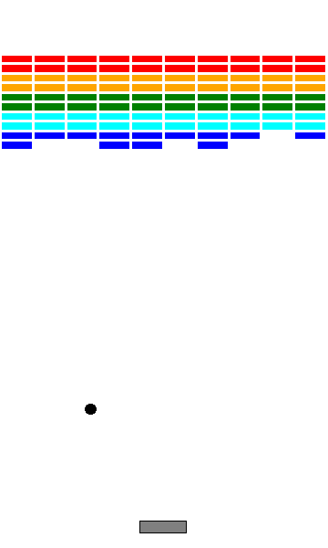
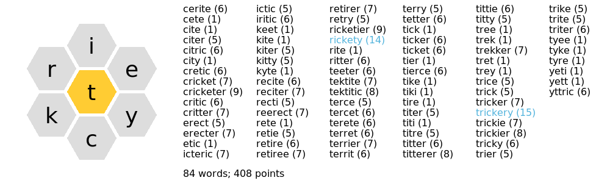
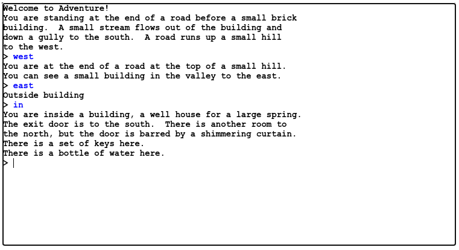
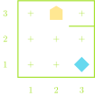

Introducing Karel
Jed Rembold
January 20, 2021
Announcements
- Welcome to CS-151: Intro to Programming with Python!
- Things to do:
- Access the course webpage at here!
- There is also a link to the course webpage from the WISE site
- Read over the full syllabus
- Get yourself a copy of the book
- Make sure you can find and access the class forum on Discord
- Invite link on WISE
- Bring phone or computer for polling questions in the future
- Access the course webpage at here!
- Homework
- HW0 will be posted by the end of the day, due at the end of Sunday
- Will work in lab today to make sure you are setup with everything you need and have been introduced to the process
My Vitals
- Name
- Jed Rembold
- Office
- Collins 311 (its shared)
- Office Hours
- M,W 3:15-5pm, or online
- Email:
- jjrembold at willamette.edu
- Office Phone:
- 503-370-6860
Motivations
- The field of computing today is scarcely recognizable compared to the field 50 years ago.
- Many feel the pace of the field is only accelerating as we move forwards.
- Studying computing now lets you take part in driving forward not only the field of computing, but of all the modern fields with utilize computing.
- Almost all fields!
Squad Goals
To gain the skills, knowledge, and confidence necessary to write, test, and debug Python programs requiring several hundred lines of code.
Doing so will require that students be able to:
- implement simple algorithms using Python control structures,
- apply decomposition and step-wise refinement techniques,
- make effective use of recursing computing strategies,
- design data structures to model information,
- execute all phases of the programming process, including design, implementation, testing and debugging,
- and defend the argument that computer science is far more than just programming.
Grading
- Standard 90/80/70 etc grade cut-offs
- Top 2% get +’s, bottom 2% get -’s
| Participation | 5% |
| Problem Sets | 15% |
| Projects | 25% |
| Lab | 10% |
| Midterm | 20% |
| Final Exam | 25% |
Participation
- Scored through participation in class polls or in contacting me with a question about a specific slide.
- Generally 1-2 polls per day
- Answering any poll gets you full points for the day (even if you are wrong!)
- Answering correctly gets you bits of extra credit
- Polling website at http://rembold-class.ddns.net
- Will start on Friday
Homework
- Falls into two categories:
- Problem Sets: smaller, more focused assignments
- Graded on standard, numeric scales
- Projects: larger, more integrative assignments
- Graded on a more qualitative scale (next slide)
- Problem Sets: smaller, more focused assignments
- All will be due on Sundays at 11:59pm
- Submissions of both will be handled through Github Classroom
- Instructions for this will be in today’s lab
- 3 cumulative late days over the entire semester without penalty then penalties enacted for each subsequent day late
- Extensions for any reason need to be requested and approved by myself
Project Sneak Peeks!




Project Scoring
| | A submission so good it “makes you weep” |
| | Exceeds requirements |
| | Satisfies all assignment requirements |
| | Meets most requirements, but some issues |
| | Some more serious problems evident |
| | Even worse… |
| | Why even bother turning this in? |
Labs
- We have lab from 2:15-3:15 on Wednesdays and Fridays
- I will (try to) budget about 30 – 40 minutes of this hour
- Exercises involving what we discussed in class that day
- Some pair programming about once a week (hopefully)
- Given the remote nature of some of you, I’ll be having all finished exercises submitted through Github Classroom
- Any remaining time will be your own to work on homework, ask questions, or leave
Sections
- New pilot program this semester!
- Everyone will be placed into small sections of 5-7 students, with one section leader
- All section leaders are students who just took and excelled at the class last semester
- Will meet as a group with your section leader once a week for an hour to go over and work on problems
- Section leaders will also serve as a secondary source you can ask for help or guidance from
- Hopefully starting up next week
Tests
- Tests are necessary to assure retention of material and ensure that some are not getting too much help on the assignments.
- Just two this semester:
- Midterm on March 19
- Final on May 7/8
- The exact form they will take is still to be determined, but I will give you plenty of notice
Communication
- I tend to find WISE lacking both from a polish perspective and from an ease of use perspective
- Historically, I have used a 3rd-party forum to focus class communication, announcements, and questions
- Given that more remote work will be occurring this semester, and to better facilitate availability of myself for answering questions, I’m planning to use a Discord server this semester
- Invite link will be posted to WISE
- Can serve for easy announcements, text-based dialog, and voice/video communication
- Totally free to sign up and use
Academic Honesty
- You must not look at solutions or program code that is not your own.
- You must not share your solution code with other students.
- But you are welcome (and encouraged!) to work alongside others enroute to finding a solution.
- You must indicate on your submitted assignment any assistance you received or who you worked alongside.
Diving In
- This course is an introduction on computer science, and covers more than just programming!
- Python is used to teach the programming portion of the course, but the focus is less on Python itself and more on general computer science principles.
- If you come across situations where you need to know a bit more about specific Python details, there are plenty of resources online, or just ask me!

Effective Communication
- To communicate effectively, you really need two layers of communication:
- A shared language or method of conveying information
- French, for instance
- In our case, Python
- A joint agreement about what constitutes meaning and ways to limit confusion or misunderstanding
- Being able to explain things clearly and unambiguously
- A shared language or method of conveying information
Giving Clear Instructions
- We will initially make the language extremely simple so that we can focus on the second layer
- Karel the Robot exists in a very simple 2D world
- Has a very limited set of actions:
- Can move forward one space
- Can rotate counter-clockwise (turn left) 90 degrees
- Can pick up a beeper
- Can drop off a beeper
- We will be spending the first several class days just interested in how we can take these simple instructions and get Karel to solve a wide variety of problems
- This content is not in your book, but more in-depth descriptions can be found here
The World
- Karel’s world is defined on a grid
- avenues run north-south
- streets run east-west
- The intersection between a street and avenue is called a corner
- Compass directions are as you’d have them on a map, with North pointing upwards
- Walls are impassable
- Beepers are diamonds
- Karel is a house-shaped polygon

Commands
- As we mentioned before, Karel is a simple robot, and can really only do 4 potential actions
| Command | Action |
|---|---|
move() |
Moves Karel forward one corner in whatever direction they are facing |
turn_left() |
Rotates Karel 90 deg counter-clockwise |
pick_beeper() |
Picks up a beeper on the ground |
put_beeper() |
Places a beeper on the ground |
- Our commands are just sequences of these actions
Example
- Suppose we had the situation to the right and wanted to navigate to the beeper, pick it up, and then drop it at the corner of 1st avenue and 1st street.
- Take a moment to write out your instructions.
- Remember you can only move, rotate left, and pick up or drop the beeper
- Note that there are multiple ways to do this! Which is better?

One Solution
def main():
turn_left()
turn_left()
turn_left()
move()
turn_left()
move()
turn_left()
turn_left()
turn_left()
move()
pick_beeper()
turn_left()
turn_left()
turn_left()
move()
move()
put_beeper()